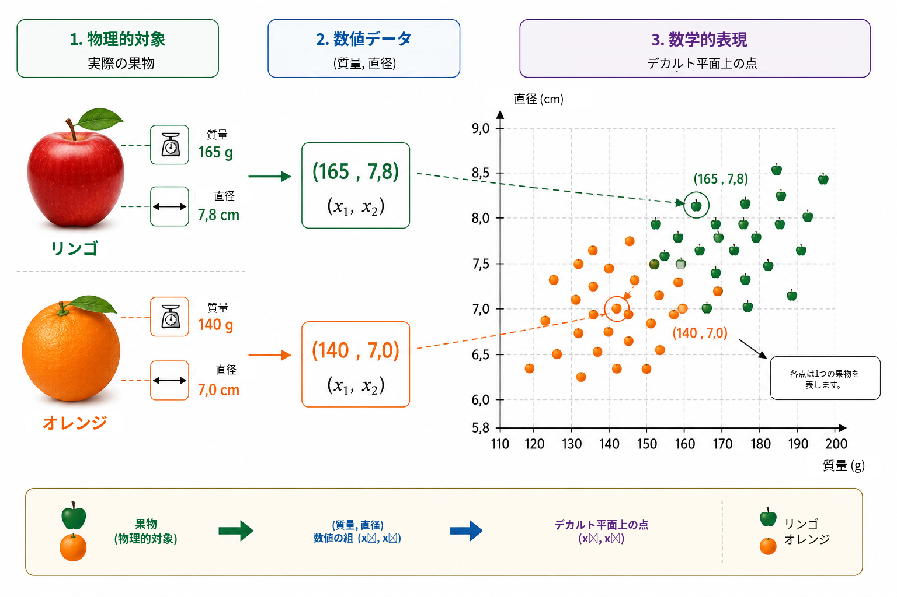
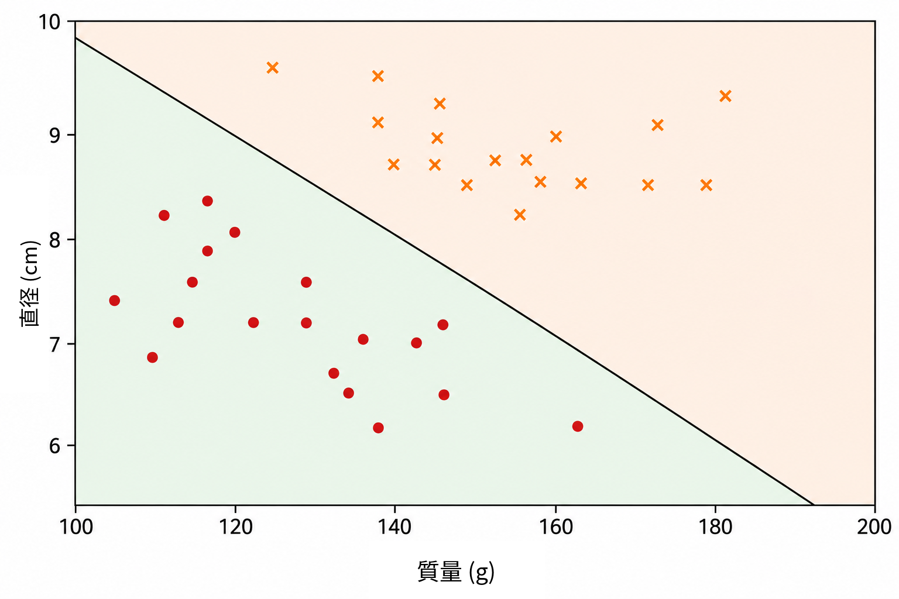
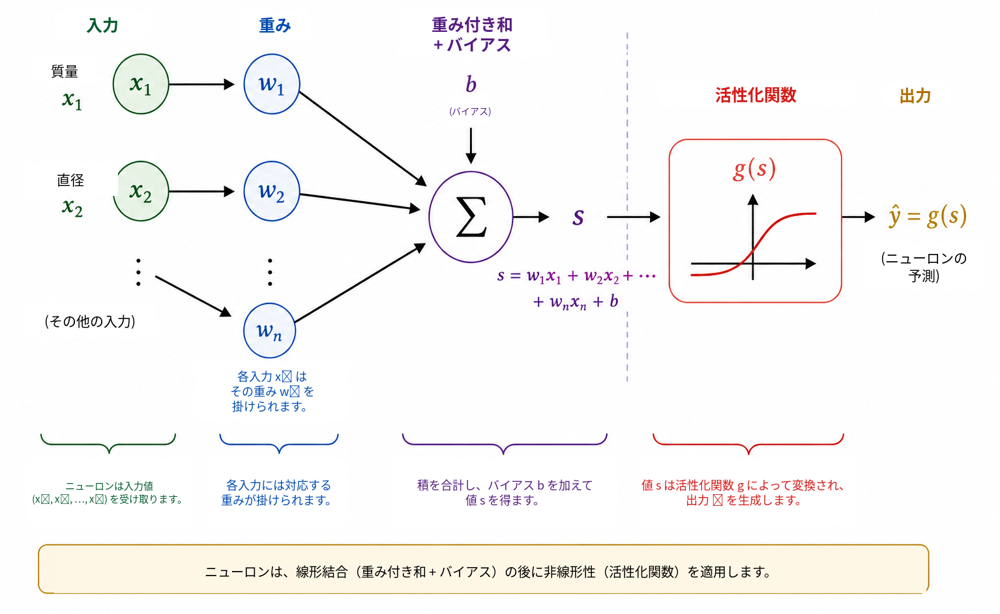
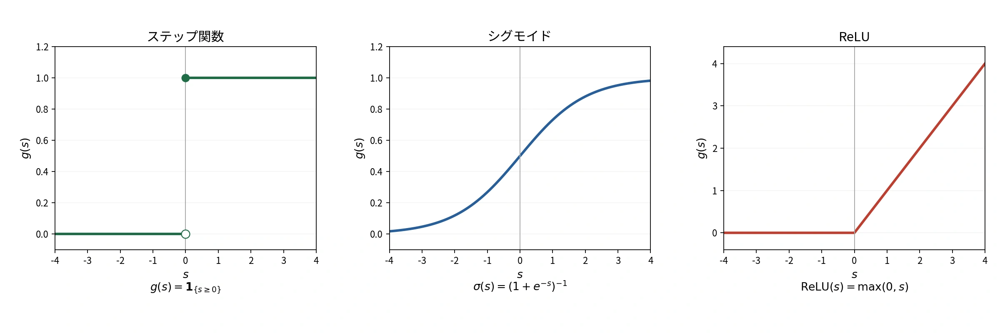
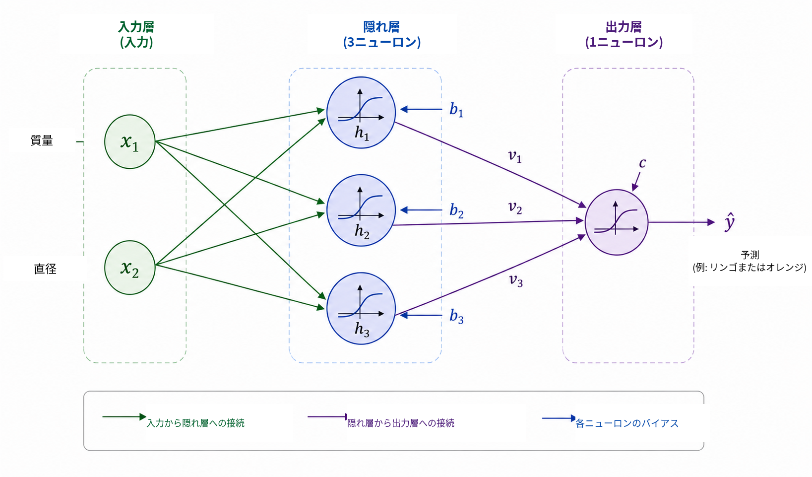
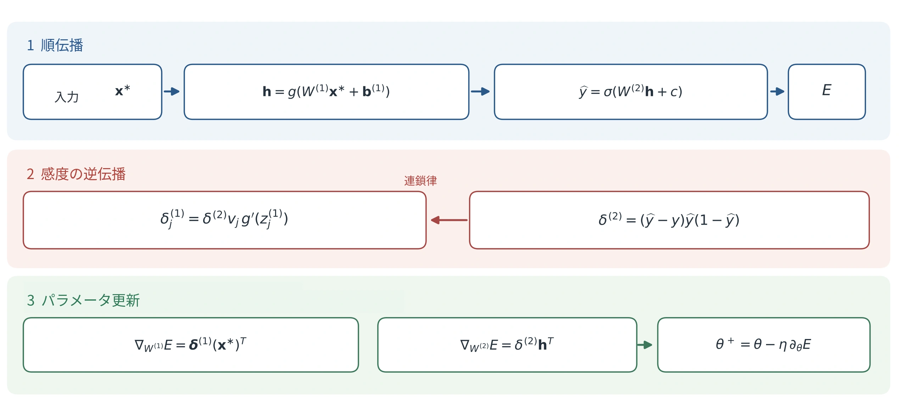
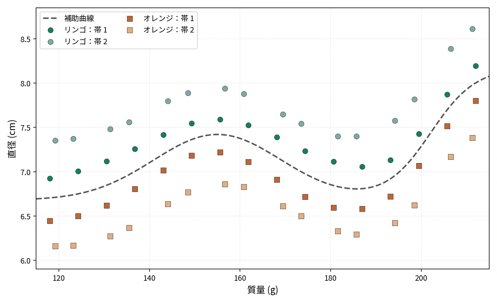
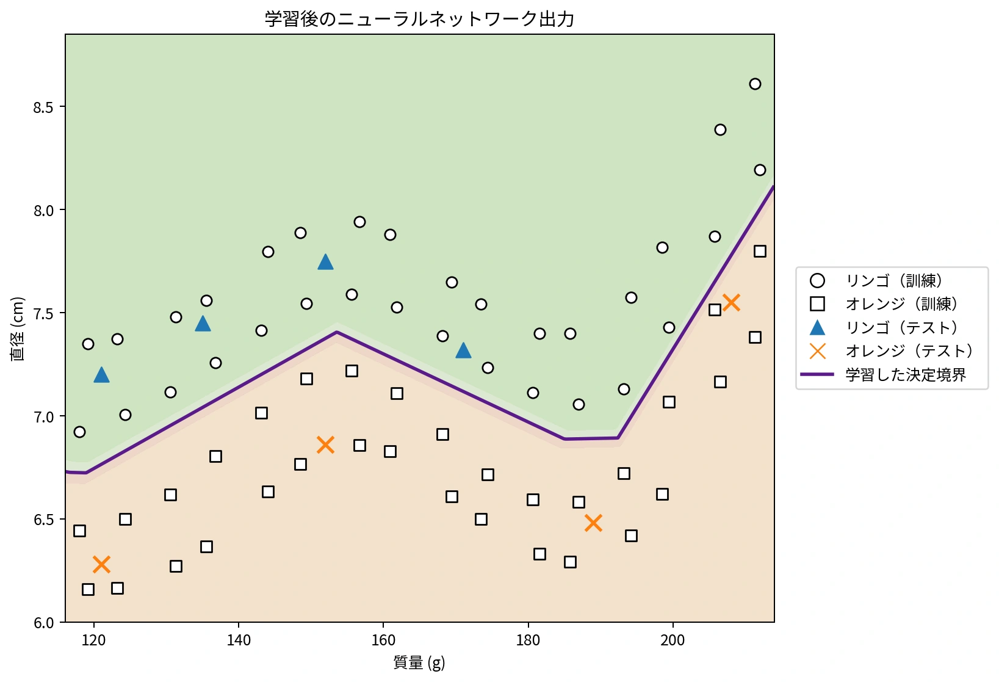

コンピュータはいつ学習できるのか？
日常生活では，私たちはほとんど意識することなく分類の判断を行っている。果物を見ればすぐにリンゴかオレンジかを見分け，携帯電話にメッセージが届けば通常の会話と不要な広告を区別する。医療分析では複数の測定値を組み合わせて判断を支援でき，金融機関では信用供与の前にさまざまな情報が評価される。これらの例ではいずれも，複数の特徴を同時に考慮して一つの答えを得ている。
多くの従来型コンピュータプログラムでは，その答えを生み出す規則をプログラマが明示的に記述する。この方法は，規則が既知で明確に表現できる場合には有効である。しかし，データの変動が大きい場合や，良い判断に必要な条件をすべて事前に記述することが難しい場合には，この方法は十分に機能しなくなる。そこで自然に次の問いが生じる。
判断規則をあらかじめ与える代わりに，例からその規則を学ぶプログラムを作ることはできるだろうか？
これは，データからモデルを適合させる方法を扱う人工知能の一分野である機械学習の中心的な考え方の一つである 。教師あり学習では，アルゴリズムは正しい答えが付いた例を受け取り，学習に使われなかった例に対しても有用な予測を行えるモデルを求める。この目的のために開発された多くのモデルの中で，人工ニューラルネットワークは画像認識，自然言語処理，信号解析，時系列予測などで重要な役割を果たしている 。
ニューラルネットワークを数学，計算，学校教育を結ぶ題材として用いる試みは，Batista と Martins によって Professor de Matemática Online ですでに論じられている 。そこでは教員教育，Python，数字認識を組み合わせた活動が紹介されている。本稿はそれを補完する別の道を取る。主な目的は，小さなニューラルネットワーク内部の数学を明らかにし，解析幾何から出発して，勾配の計算と逆伝播の手作業による実装までを段階的にたどることである。
現代の応用は非常に高度に見えるが，ニューラルネットワークの数学的核心は比較的馴染みのある考え方から導入できる。基本的には，ニューラルネットワークはデータに基づいてパラメータが調整される関数の合成である。まず単純な幾何学的問題を扱い，分離直線を人工ニューロンとして捉え直し，複数のニューロンを接続し，活性化関数の役割を調べ，導関数を用いてネットワークのパラメータを自動的に調整する方法を示す。その後，数式とコードの直接的な対応を保ちながら，完全な小規模例を Python で実装する。
問題を数学的に表現する
ニューラルネットワークの仕組みを理解するために，意図的に単純な問題から始める。すなわち，リンゴとオレンジを区別する問題である。果物には色，質量，直径，表面の質感，香りなど，分類に役立ちうる多くの特徴がある。しかし最初の数学モデルに，これらすべての複雑さを含める必要はない。ここでは，容易に測定できる二つの量だけを用いる。質量をグラムで，直径をセンチメートルで測る。
したがって，各果物を順序対 \[(x_1,x_2),\] で表し， \[x_1=\text{質量} \qquad\text{および}\qquad x_2=\text{直径}\] とする。
たとえば \((155,\;7.2)\) は，質量 \(155\) g，直径 \(7.2\) cm の果物を表す。物理的な物体を二つの数値測定値に置き換えることで，各果物をデカルト平面上の点に対応させる。第1座標が質量，第2座標が直径である。図 1 は，仮想的なリンゴとオレンジの集合についてこの表現を示している。

この変換によって，問題の見え方が変わる。リンゴやオレンジを直接どう認識するかと問う代わりに，二つのクラスに属する点を平面上でどのように分離できるか，という幾何学的な問いを立てられる。この視点の変更は機械学習において本質的である。画像，文章，音声，実験信号はいずれも，アルゴリズムで処理する前に数値表現へ変換しなければならない。本例では各物体は二つの座標しか持たないが，実際の応用では表現が数百，数千，あるいは数百万の成分を含むこともある。原理は同じであり，各例を数値の集合に対応させ，モデルはその表現を望ましい答えへ写す規則を求める。
まず最も単純な幾何学的規則から始め，一本の直線だけでリンゴの点とオレンジの点を十分に分離できるかを考える。
分類器としての直線
各果物をデカルト平面上の点として表すと，分類は幾何学的問題になる。一本の直線でリンゴとオレンジを分けられるだろうか。この問いは，線形分類器と呼ばれる重要な機械学習手法の基本的な考え方を表している。
図 2 のように，データ点の集まりを横切る一本の直線を考える。この直線は平面を二つの半平面に分ける。リンゴの点の大部分が一方に，オレンジの点の大部分が他方にあるなら，新しい果物が直線のどちら側に位置するかを分類規則として使える。質量と直径を測り，果物を点として表し，その点がどちらの半平面にあるかを調べればよい。

デカルト平面 \((x_1,x_2)\) では，直線を \[w_1x_1+w_2x_2+b=0, \qquad (w_1,w_2)\neq(0,0)\] と表せる。
ベクトル \((w_1,w_2)\) は直線に垂直であり，その向きを決める。一方，パラメータ \(b\) は直線の位置に関与する。この表現にはわずかな冗長性がある。\(w_1,w_2,b\) を同じ非零定数倍しても，同じ直線が得られる。したがって境界を記述するパラメータは一意ではない。また，それらの数値的な解釈は変数の尺度にも依存する。質量はグラム，直径はセンチメートルで測定されるので，単位の違いを考慮せずに \(w_1\) と \(w_2\) の数値の大きさを直接比較するべきではない。
直線の方程式そのものを使えば，点が境界のどちら側にあるかを簡単に判定できる。スコアを \[s(x_1,x_2)=w_1x_1+w_2x_2+b\] と定義する。
\(s(x_1,x_2)=0\) なら点は直線上にある。\(s(x_1,x_2)>0\) なら一方の半平面にあり，\(s(x_1,x_2)<0\) なら他方にある。正のスコアをリンゴ，負のスコアをオレンジに対応させると，規則は \[\begin{cases} s(x_1,x_2)\geq 0 & \Longrightarrow \text{リンゴ},\\ s(x_1,x_2)<0 & \Longrightarrow \text{オレンジ} \end{cases}\] となる。
たとえば，境界が \[w_1=\frac{1}{10}, \qquad w_2=2, \qquad b=-30\] で定められているとする。質量 \(160\) g，直径 \(7.8\) cm の果物については， \[\begin{aligned} s &=\frac{1}{10}\times160+2\times7.8-30\\ &=16+15.6-30\\ &=1.6 \end{aligned}\] である。スコアが正なので，この点はリンゴに対応させた半平面にある。したがってこの分類器は，この果物をリンゴと判定する。
\(w_1,w_2,b\) のどのような選び方でも良い分類が得られるわけではない。二つのグループをうまく分離できない直線もあれば，誤りの少ない直線もある。学習問題とは，ラベル付きの既知の例を用いて，モデル誤差を表す量を小さくするパラメータ値を求めることにほかならない。直線の位置を直接プログラムするのではなく，アルゴリズムがデータから係数を調整するようにしたい。
クラスがおおよそ線形分離可能なら，一本の直線で十分に機能する場合がある。しかし，より複雑なデータ集合では非線形な境界が必要になる。その限界を扱う前に，いま構成した分類器を基本的な計算単位，すなわち人工ニューロンとして捉え直す。
人工ニューロン
前節では， \[s=w_1x_1+w_2x_2+b\] という式を使って，果物が直線のどちら側にあるかを決めた。同じ式は，人工ニューロンが行う計算の最初の段階とみなすことができる。ニューロンは数値入力を受け取り，重みとバイアスを用いてそれらを組み合わせ，その後，数学的な関数を適用して出力を得る。
本例では入力は質量 \(x_1\) と直径 \(x_2\) である。各入力には重みと呼ばれるパラメータが掛けられ，その積を，バイアスと呼ばれる定数項 \(b\) とともに加える。図 3 にこの計算を模式的に示す。

重みは，入力の変化がスコアにどのような影響を与えるかを決める。\(x_2\) と他のすべての量を固定すると，\(x_1\) の変化 \(\Delta x_1\) は \(s\) を \(w_1\Delta x_1\) だけ変化させる。同様に，\(x_2\) の変化 \(\Delta x_2\) はスコアを \(w_2\Delta x_2\) だけ変える。符号も重要である。正の重みでは入力が増えるとスコアも増え，負の重みでは逆の効果が生じる。ただし，異なる変数が異なる単位や尺度を持つ場合には，この解釈には注意が必要である。そのため実用的な実装では，学習前に入力データを正規化または標準化することが多い。
バイアス \(b\) はアフィン変換の定数項である。幾何学的には，決定境界を平行移動させる役割を持つ。\(b=0\) なら， \[w_1x_1+w_2x_2=0\] という式により直線は原点を通らなければならない。バイアスがあれば，境界を別の位置へ移動できる。言い換えれば，\(x_1=x_2=0\) のときスコアは単に \(s=b\) である。
スコアは必ずしもニューロンの最終出力ではない。一般には，そこに活性化関数 \(g\) を適用する。 \[\widehat{y}=g(s)=g\left(w_1x_1+w_2x_2+b\right).\] したがって計算は二段階からなる。 \[\begin{aligned} s &= w_1x_1+w_2x_2+b,\\[4pt] \widehat{y} &= g(s). \end{aligned}\]
前節のパラメータ値を用いると \(s=1.6\) である。ステップ関数 \[g(s)= \begin{cases} 1, & s\geq0,\\ 0, & s<0 \end{cases}\] を選べば，\(\widehat{y}=g(1.6)=1\) となる。ここで採用した規則では，この果物はリンゴと分類される。この活性化関数では \(s\) がゼロを横切ると判断が変化するので，クラス境界はちょうど \[w_1x_1+w_2x_2+b=0\] である。
したがって，一つのニューロンは調整可能なパラメータを持つ単純な数学的対象である。その真の重要性は，多数のニューロンを接続したときに現れる。しかしネットワークを構成する前に，なぜ活性化関数が不可欠なのかを理解しておく必要がある。
なぜ活性化関数が必要なのか？
ニューロンはまずアフィン変換によってスコアを計算し，その後に活性化関数を適用する。この第二段階は，ニューラルネットワークが複雑な関係を表現するために不可欠である。その理由を見るため，活性化関数をまったく使わないネットワークを考えよう。その場合，すべてのユニットは \[y=w_1x_1+w_2x_2+b\] の形になる。
一次元の例として，第1のユニットが \[h=ax+b\] を出力し，第2のユニットが \[y=ch+d\] を計算するとする。代入すれば， \[y=c(ax+b)+d=acx+(cb+d)\] となり，これは依然として \(x\) のアフィン関数である。多次元でも同じであり，アフィン変換をいくつ合成しても結果はアフィン変換のままである。したがって，非線形な操作を挟まずに層を増やしても，ネットワークの表現力は本質的には増えず，合成全体を一つのアフィン変換で置き換えることができる。
活性化関数はこの制約を破る。スコア \(s\) を計算した後，ニューロンは通常，非線形写像 \[h=g(s)\] を適用する。このようなユニットを複数接続すると，得られる合成は一つのアフィン変換には還元できなくなる。その結果，ネットワークはより複雑な決定境界を構成できる。
最も単純な活性化関数はステップ関数 \[g(s)= \begin{cases} 1, & s\geq0,\\ 0, & s<0 \end{cases}\] である。これは二値の判断を与えるため，分類の考え方を理解するには非常に有用である。しかしその導関数は \(s\neq0\) で \(0\)，\(s=0\) では定義されない。勾配に基づく学習では，パラメータをどのように変えるかを決めるために導関数を用いるので，ステップ関数はその学習機構には適していない。
代替の一つがシグモイド関数 \[\sigma(s)=\frac{1}{1+e^{-s}}\] である。これはすべての実数を \(0\) と \(1\) の間の値へ写す。\(s\) が非常に負なら出力は \(0\) に近づき，\(s\) が非常に正なら \(1\) に近づく。その中間では滑らかに変化する。シグモイド関数はすべての点で微分可能で， \[\sigma'(s)=\sigma(s)\bigl(1-\sigma(s)\bigr)\] を満たす。出力が \(0\) と \(1\) の間にあるため，二値分類器の出力層でよく使われる。適切な損失関数を用いた確率的な定式化では，出力を「クラス \(1\) である確率」の推定値と解釈できる。ただし隠れ層でシグモイドを使うと，入力の絶対値が大きいところで導関数が非常に小さくなり，深いネットワークにおける勾配消失の原因の一つとなる。
隠れ層で広く使われる活性化関数が ReLU（Rectified Linear Unit）である。 \[\mathrm{ReLU}(s)=\mathrm{max}(0,s) = \begin{cases} 0, & s<0,\\ s, & s\geq0. \end{cases}\] ReLU は二つの線形部分から構成されているが，全体としては線形ではない。その導関数は \(s<0\) で \(0\)，\(s>0\) で \(1\) である。\(s=0\) では通常の導関数は存在しないため，ソフトウェア実装では勾配に対して何らかの約束を採用する。正の入力に対しては，\(s\) が大きくなっても導関数は小さくならないため，シグモイドに見られる飽和の一つを避けられる。
図 4 は，これら三つの活性化関数を視覚的に比較している。ステップ関数の急激な跳び，シグモイドの滑らかな遷移，ReLU の傾きの変化が確認できる。

主な性質を以下にまとめる。
| 関数 | 出力 | 導関数 | 典型的な用途 |
|---|---|---|---|
| ステップ | \(\{0,1\}\) | \(s\neq0\) では \(0\)，\(s=0\) では未定義 | 歴史的モデル，教育的な例 |
| シグモイド | \((0,1)\) | すべての \(s\) で存在 | 二値分類の出力層 |
| ReLU | \([0,\infty)\) | \(s<0\) では \(0\)，\(s>0\) では \(1\) | 隠れ層 |
これらの関数は細部こそ異なるが，共通する概念的役割は非線形性を導入することである。この非線形性によって，次節の小さなネットワークは一本の直線では表現できない関係を表せるようになる。
さらに学びたい読者には，Haykin がニューラルネットワークの古典的な解説を与えており，Goodfellow，Bengio，Courville は活性化関数と深層ネットワークの学習をより広い文脈で論じている。Nielsen の無料公開されているテキスト は，ニューロン，活性化関数，学習について直感を養ううえで特に読みやすい。
小さなニューラルネットワークを構成する
ここでは，二つの入力，三つのニューロンを含む一つの隠れ層，そして一つの出力ニューロンからなるネットワークを考える。入力は引き続き \[x_1=\text{質量}, \qquad x_2=\text{直径}\] であり，図 5 に示すように，どちらも各隠れニューロンへ入力される。

隠れ層の出力を \(h_1,h_2,h_3\) とする。各ニューロンは同じ二つの入力を受け取るが，それぞれ独自の重みとバイアスを持つ。 \[\begin{aligned} h_1&=g\left(w_{11}x_1+w_{12}x_2+b_1\right),\\[4pt] h_2&=g\left(w_{21}x_1+w_{22}x_2+b_2\right),\\[4pt] h_3&=g\left(w_{31}x_1+w_{32}x_2+b_3\right). \end{aligned}\]
三つのニューロンはすべて同じ質量と直径を受け取るが，パラメータが異なるため，異なる応答を生成できる。学習では，これらのパラメータを調整して，中間的な活性が分類に役立つようにする。
次に \(h_1,h_2,h_3\) を出力ニューロンへ渡す。出力ニューロンは \[s_{\mathrm{out}}=v_1h_1+v_2h_2+v_3h_3+c\] を計算し， \[\widehat{y}=g_{\mathrm{out}}\left(s_{\mathrm{out}}\right)\] を出力する。今回の二値分類問題では，出力にシグモイドを用いる。 \[\widehat{y}=\sigma\left(v_1h_1+v_2h_2+v_3h_3+c\right), \qquad 0<\widehat{y}<1.\]
リンゴを \(y=1\)，オレンジを \(y=0\) とし，しきい値を \(0.5\) とすれば，クラス判定は \[\widehat{y}\geq0.5 \Longrightarrow \text{リンゴ}, \qquad \widehat{y}<0.5 \Longrightarrow \text{オレンジ}\] となる。したがって，\(1\) に近い値はリンゴと強く対応し，\(0\) に近い値はオレンジと対応する。前述のとおり，\(\widehat{y}\) を数値的に確率として解釈するには，モデルと学習方法に関する追加の仮定が必要である。ここで用いる分類規則では，\(\widehat{y}\) を連続値のネットワーク出力とみなせば十分である。
この構成の中心的な特徴は，中間表現 \[(x_1,x_2) \longrightarrow (h_1,h_2,h_3) \longrightarrow \widehat{y}\] にある。ネットワークは二つの特徴量を受け取り，最終的な答えを出す前に三つの新しい量を構成する。これらの活性は人が手作業で選ぶのではない。重みとバイアスに依存しており，したがって学習によってパラメータが変わると活性も変化する。
このネットワークは小さいにもかかわらず，すでに13個の調整可能なパラメータを持つ。三つの隠れニューロンには \[3(2+1)=9\] 個のパラメータがあり，出力ニューロンには \[3+1=4\] 個ある。したがって， \[9+4=13\] である。
同じ数え上げは行列表記にするとより明瞭になる。 \[\mathbf{x}= \begin{bmatrix} x_1\\x_2 \end{bmatrix}, \qquad W^{(1)}= \begin{bmatrix} w_{11}&w_{12}\\ w_{21}&w_{22}\\ w_{31}&w_{32} \end{bmatrix}, \qquad \mathbf{b}^{(1)}= \begin{bmatrix} b_1\\b_2\\b_3 \end{bmatrix}.\] すると隠れ層は簡潔に \[\mathbf{h}=g\left(W^{(1)}\mathbf{x}+\mathbf{b}^{(1)}\right)\] と書ける。ここで \(g\) は成分ごとに作用する。出力については \[\widehat{y} = \sigma\left(W^{(2)}\mathbf{h}+b^{(2)}\right),\] ただし \[W^{(2)}= \begin{bmatrix} v_1&v_2&v_3 \end{bmatrix}\] である。
この表記は，後に Python プログラムで現れる構造を先取りしている。果物を入力し，\(\widehat{y}\) が得られるまで順に活性を計算する過程を，順伝播（forward propagation）またはforward pass と呼ぶ。残る中心的な問いは，予測がデータに合うように13個のパラメータを自動的に決めるにはどうすればよいか，ということである。
ニューラルネットワークはどのように学習するのか？
重みとバイアスはあらかじめ与えられるのではなく，正解ラベル付きの事例から調整される。学習では，順伝播，損失の計算，勾配の計算，パラメータ更新を反復する（図 6）。連鎖律により，各重みとバイアスを微小に変えたときの損失の変化を求められることが重要である。
調整には，予測と正解との食い違いを数値で測る必要がある。この指標を損失関数と呼ぶ。損失関数は各予測に罰則を与え，異なるパラメータを比較可能にする。単に誤分類数を数える方法とは異なり，連続的な損失は正解に近い予測と遠い予測を区別し，学習の方向を与える導関数をもつ。
質量 \(140\) g，直径 \(7.0\) cm のオレンジ（\(y=0\)）を考えよう。ネットワークの出力を \(\widehat y\in(0,1)\) とすると，１事例の二乗損失を次のように定める。
\[\label{eq:perda} E=\frac12(\widehat y-y)^2.\]
ここで \(y\) は真のクラス，\(\widehat y\) は予測値である。損失は非負で，予測がラベルに近づくほど小さい。例えばオレンジに対する予測 \(0.80\) と \(0.60\) の損失はそれぞれ \(E=0.32\) と \(E=0.18\) となる。閾値 \(0.5\) ではどちらも誤分類だが，後者の方が正解に近い。係数 \(1/2\) は最小化点を変えず，微分を簡潔にする。
多数の事例から学習するため，各事例の損失をまとめる。\(N\) 個の観測に対して平均損失を定義する。
\[\label{eq:perda_media} J=\frac1N\sum_{i=1}^{N}E_i.\]
この平均は訓練集合上の性能を要約し，パラメータ調整によって減らそうとする量である。しかし \(J\) の最小化だけでは未知の事例に対する性能は保証されない。導出には代数的に簡単な式 perda を用い，後にバイナリ交差エントロピーの勾配と比較する。ただし計算実験そのものは変更しない [2, 3]。

\(\theta\) を重みまたはバイアスとすると，\(\partial J/\partial\theta\) はそのパラメータに対する平均損失の局所感度である。勾配降下法の１ステップは次式で与えられる。
\[\label{eq:descida} \theta_{\mathrm{new}}=\theta_{\mathrm{old}}-\eta\frac{\partial J}{\partial\theta},\qquad \eta>0.\]
学習率 \(\eta\) は更新幅を制御する。小さすぎると収束が遅くなり，大きすぎると振動や発散が起こり得る。次節のコードのように各観測後に更新するときは，\(\partial J/\partial\theta\) の代わりに \(\partial E_i/\partial\theta\) を用いる。本稿ではこの確率的勾配降下法（SGD）を採用する。
2–3–1 ネットワークにおける連鎖律
図 5 のネットワークを用い，３つの隠れニューロンには ReLU，出力にはシグモイドを適用する。質量（g）と直径（cm）は数値尺度が異なる。パラメータ推定の条件を悪化させないよう，各特徴量を \(x_j^{\ast}=(x_j-\mu_j)/\sigma_j\) に変換する。ここで \(\mu_j\) は基準平均，\(\sigma_j>0\) は基準標準偏差である。これにより入力は無次元となり，尺度が揃って学習率を選びやすくなる。計算実験ではこの統計量を訓練集合からのみ求め，テストデータの漏洩を防ぐ。以下の手計算では簡単のため固定値を用いる。標準化入力 \(\mathbf{x}^{\ast}=(x_1^{\ast},x_2^{\ast})^{\mathsf T}\) に対する順伝播は
\[\label{eq:forward} \begin{aligned} \mathbf{z}^{(1)}&=W^{(1)}\mathbf{x}^{\ast}+\mathbf{b}^{(1)}, &\mathbf{h}&=\operatorname{ReLU}(\mathbf{z}^{(1)}),\\ z^{(2)}&=W^{(2)}\mathbf{h}+c, &\widehat y&=\sigma(z^{(2)}). \end{aligned}\]
ここで \(c=b^{(2)}\) は出力バイアス，\(W^{(2)}=(v_1,v_2,v_3)\) である。逆伝播は出力ニューロンから始まり，連鎖律を順次適用する。
\[\label{eq:delta_saida} \begin{aligned} \delta^{(2)}:=\frac{\partial E}{\partial z^{(2)}} &=\underbrace{\frac{\partial E}{\partial\widehat y}}_{\widehat y-y} \underbrace{\frac{\partial\widehat y}{\partial z^{(2)}}}_{\widehat y(1-\widehat y)} =(\widehat y-y)\widehat y(1-\widehat y),\\ \frac{\partial E}{\partial v_j}&=\delta^{(2)}h_j, \qquad \frac{\partial E}{\partial c}=\delta^{(2)}. \end{aligned}\]
各活性値 \(h_j\) は隠れニューロンの重みとバイアスにも依存するため，それらの感度は次式となる。
\[\label{eq:delta_oculta} \begin{aligned} \delta_j^{(1)}:=\frac{\partial E}{\partial z_j^{(1)}} &=\delta^{(2)}v_j\,\operatorname{ReLU}'(z_j^{(1)}),\\ \frac{\partial E}{\partial w_{jk}} &=\delta_j^{(1)}x_k^{\ast},\qquad \frac{\partial E}{\partial b_j}=\delta_j^{(1)}. \end{aligned}\]
ReLU は零で微分不可能である。計算上の規約として必要な場合には \(\operatorname{ReLU}'(0)=0\) とする。\(\delta^{(2)}\) と \(\delta_j^{(1)}\) は損失の局所的感度であり，ネットワーク内を物理的に伝わる「誤差」ではない。これらを再利用することで，13 個のパラメータそれぞれについて微分を最初から繰り返す必要がなくなる。
１回のパラメータ更新を数値で追う
計算を明確にするため，この例に限り，質量の基準中心・尺度を \(160\) g と \(20\) g，直径のそれらを \(7.5\) cm と \(0.5\) cm とする。果物 \((140\,\mathrm{g},7.0\,\mathrm{cm})\) は無次元入力
\[\label{eq:exemplo_entrada} \mathbf{x}^{\ast}=\begin{bmatrix}(140-160)/20\\(7.0-7.5)/0.5\end{bmatrix} =\begin{bmatrix}-1\\-1\end{bmatrix}.\]
に対応する。これらの値は説明のため固定したものであり，節 8 のプログラムは訓練データから平均と標準偏差を計算する。
初期の 13 個のパラメータを次のように選ぶ。
\[\label{eq:param_iniciais} W^{(1)}=\begin{bmatrix} 0.2&0.1\\-0.3&0.2\\0.1&-0.4 \end{bmatrix},\quad \mathbf{b}^{(1)}=\begin{bmatrix}\phantom{-}0.5\\\phantom{-}0.2\\-0.5\end{bmatrix},\quad W^{(2)}=\begin{bmatrix}\phantom{-}0.5&-0.4&\phantom{-}0.3\end{bmatrix},\quad c=1.\]
式 forward から順に次を得る。
\[\label{eq:exemplo_forward} \begin{gathered} \mathbf{z}^{(1)}=(0.2,\;0.3,\;-0.2)^{\mathsf T},\qquad \mathbf{h}=(0.2,\;0.3,\;0)^{\mathsf T},\\ z^{(2)}=0.5(0.2)-0.4(0.3)+1=0.98,\\ \widehat y=\sigma(0.98)\simeq0.727108,\qquad E\simeq0.264343. \end{gathered}\]
初期予測は誤分類である。式 delta_saida と delta_oculta から，
\[\label{eq:exemplo_gradientes} \begin{gathered} \delta^{(2)}\simeq0.144274,\qquad \boldsymbol{\delta}^{(1)}\simeq(0.072137,\;-0.057710,\;0)^{\mathsf T},\\ \frac{\partial E}{\partial W^{(2)}}\simeq (0.028855,\;0.043282,\;0),\qquad \frac{\partial E}{\partial W^{(1)}}\simeq \begin{bmatrix}-0.072137&-0.072137\\\phantom{-}0.057710&\phantom{-}0.057710\\\phantom{-}0&\phantom{-}0\end{bmatrix}. \end{gathered}\]
第３隠れニューロンは不活性（\(z_3^{(1)}<0\)）なので，この更新ではその入力重みとバイアスの勾配は零になる。\(\eta=0.05\) とし，全パラメータに \(\theta_{\mathrm{new}}=\theta_{\mathrm{old}}-0.05\,\partial E/\partial\theta\) を同時に適用する。表 1 は 13 個の更新から代表例を示す。
| パラメータ \(\theta\) | 初期値 | \(\partial E/\partial\theta\) | 更新後 |
|---|---|---|---|
| \(v_1\) | \(0.500000\) | \(0.028855\) | \(0.498557\) |
| \(v_2\) | \(-0.400000\) | \(0.043282\) | \(-0.402164\) |
| \(c\) | \(1.000000\) | \(0.144274\) | \(0.992786\) |
| \(w_{11}\) | \(0.200000\) | \(-0.072137\) | \(0.203607\) |
| \(w_{21}\) | \(-0.300000\) | \(0.057710\) | \(-0.302885\) |
| \(b_1\) | \(0.500000\) | \(0.072137\) | \(0.496393\) |
| \(w_{31}\) | \(0.100000\) | \(0\) | \(0.100000\) |
更新したすべてのパラメータを使って順伝播を再計算すると，\(\widehat y_{\mathrm{new}}\simeq0.723717\)，\(E_{\mathrm{new}}\simeq0.261883\) となり，１ステップで損失は減少する。分類結果はまだ変わらない。学習には多数の事例とエポックを通した反復が必要である。
二乗誤差と交差エントロピー
二乗誤差は連鎖律の説明に適している。一方，シグモイド出力を用いた二値分類ではバイナリ交差エントロピーも広く使われる。\(y\in\{0,1\}\) と \(\widehat y=\sigma(z)\) に対し，１観測の損失は
\[\label{eq:entropia_cruzada} E_{\mathrm{CE}}=-y\ln\widehat y-(1-y)\ln(1-\widehat y).\]
二乗損失は予測とラベルの数値的な差を罰するのに対し，交差エントロピーは観測ラベルに低い確率を与える予測を強く罰する。ここでは \(\widehat y\) をクラス \(1\) の確率と解釈する。学習上の重要な違いは，出力スコア \(z\) に関する微分にある。\(\sigma'(z)=\widehat y(1-\widehat y)\) を用いると，
\[\label{eq:derivada_entropia_cruzada} \begin{aligned} \frac{\partial E_{\mathrm{CE}}}{\partial z} &=\left(-\frac{y}{\widehat y}+\frac{1-y}{1-\widehat y}\right) \widehat y(1-\widehat y) =\widehat y-y,\\ \frac{\partial E_{\mathrm{SE}}}{\partial z} &=(\widehat y-y)\widehat y(1-\widehat y), \qquad E_{\mathrm{SE}}=\tfrac12(\widehat y-y)^2. \end{aligned}\]
違いを独立に見るため，オレンジ（\(y=0\)）への予測を \(\widehat y=0.80\) と仮定する。\(E_{\mathrm{SE}}=0.32\)，\(E_{\mathrm{CE}}=-\ln(0.20)\simeq1.60944\) であり，\(z\) に関する導関数は順に \(0.128\) と \(0.80\) である。\(\eta=0.05\) のとき，出力バイアスだけを更新すれば二乗誤差では \(\Delta c=-0.0064\)，交差エントロピーでは \(\Delta c=-0.0400\) となる。これは先の完全な更新例の数値を置き換えるものではない。
交差エントロピーでは \(\widehat y(1-\widehat y)\) が出力層の感度に掛からず，誤った予測でシグモイドが飽和するときの追加的な勾配減衰を避けられる。しかし他の層の小さな勾配まで除去するわけではなく，常に学習が速くなる保証もない。両損失は尺度が違うため，数値の大小をそのまま品質比較に用いてはならない。再現性を保つため主プログラムでは二乗誤差を使い，比較は補足ノートブックに示す。
エポックと汎化
訓練事例をすべて一度処理することをエポックという。次節の実装は各エポックで順序を混合し，果物１個ごとに更新する。構造は固定したまま，重み，バイアス，決定境界が変化する。ただし訓練損失の低下は新しい観測に対する良い予測を保証しない。この能力を汎化といい，訓練集合への過度な適合により未知データの性能が悪化することを過学習という。より一般的な研究では訓練・検証・テスト集合を分けてハイパーパラメータ選択と性能評価を行う [2, 3]。
数学から Python へ
節 7 で導いた順伝播，連鎖律，確率的更新を NumPy のみで実装する [4]。非線形な決定境界を示すため隠れ層を３個から 12 個の ReLU ニューロンへ拡張する。この \(2\)–\(12\)–\(1\) ネットワークには \(12(2+1)+(12+1)=49\) 個のパラメータがあるが，使用する数式は同じである。
説明用の合成データ
実験では質量–直径平面に四つの帯状領域を作り，各帯 \(16\) 点，計 \(64\) 点の人工訓練例を用いる。さらに図示だけを目的とする８点を用意する。リンゴの二つの帯は補助曲線より上，オレンジの二つの帯は下に配置し，微小な決定論的ずれで規則的すぎる配置を避ける。これらの値は非線形な境界を例示するために選んだものであり，実測値でも果物の物理モデルでもない。
補助曲線はデータ生成にのみ用いる。曲線そのものはネットワークへ入力されず，損失にも逆伝播にも登場しない。訓練に使うのは質量・直径の組とクラスラベルだけである。曲線の式とずれを付録 A に示し，図 7 のデータを厳密に再現できるようにする。

図 7 は
construct_data()
から実際に得られる点を示す。破線は合成データ生成の補助曲線であり，学習された境界ではない。追加の８点は最後の図でのみ使用し，標準化の統計量の計算には含めない。
標準化と学習設定
質量と直径の単位・尺度が違うので，入力を次のように無次元化する。
\[\label{eq:padronizacao} x_j^{\ast}=\frac{x_j-\mu_j}{\sigma_j},\quad \mu_j=\frac1N\sum_{i=1}^N x_{ij},\quad \sigma_j=\sqrt{\frac1N\sum_{i=1}^N(x_{ij}-\mu_j)^2}.\]
平均 \(\mu_j\) は特徴量 \(j\) を中心化し，標準偏差 \(\sigma_j\) は尺度を揃える。ここでは \(N=64\) である。両統計量は訓練データのみから求め，テスト点には同じ値を使用する。\(\sigma_j>0\) を仮定する。予測格子にも同じ変換を適用する。
重みは乱数種 \(42\)，平均零，標準偏差 \(0.1\)
の正規分布で初期化する。小さなランダム値で隠れニューロン間の対称性を破るが，正規分布の採用は普遍的な規則ではない。深いネットワークでは構造や活性化関数を考慮して尺度を決める必要がある。バイアスの初期値は零とする。ReLU
は \(s=0\)
で微分不可能なので，relu_derivative()
はこの点の計算上の値を零とする。これは単独で収束を保証しない。
\(\eta=0.05\) は最適値ではなく慎重な選択である。乱数種とデータを固定した感度の確認として，\(1000\) エポック後の結果を表 2 に示す。このデータでは試した最大の学習率がより速く収束するが，一般的な優位性を意味しない。\(0.05\) を選ぶのは学習が安定し，損失の履歴を追いやすいためである。
| \(\eta\) | 平均損失 \(J\) | 正解数（64 点中） |
|---|---|---|
| \(0.005\) | \(0.041871\) | \(55\) |
| \(0.05\) | \(0.006485\) | \(64\) |
| \(0.2\) | \(0.000106\) | \(64\) |
Python による完全な実装
完全なプログラムをコード 1–10
に実行順で示す。関数ごとに分けた連続する 10 ブロックが，補足ファイル
neural_network.py を構成する。
01 — 実行環境の準備
"""Pedagogical example: fruit classification using a 2-12-1 network.
Dependencies: numpy and matplotlib. Run: python neural_network.py.
"""
import numpy as np
import matplotlib.pyplot as plt
from matplotlib.lines import Line2D
02 — ReLU 活性化関数
def relu(s):
"""Hidden-layer activation: ReLU(s) = max(0,s)."""
return np.maximum(0, s)
03 — ReLU の計算用導関数
def relu_derivative(s):
# ReLU is not differentiable at s=0; its computational derivative is set to 0.
# This convention only defines the backpropagation step at that point.
return (s > 0).astype(float)
04 — シグモイド活性化関数
def sigmoid(s):
"""Output activation, with values between 0 and 1."""
return 1 / (1 + np.exp(-s))
05 — データ生成用の補助曲線
def reference_curve(m):
# Artificial curve (cm): offset + Gaussian bump + logistic rise.
# The constants were chosen to construct a nonlinear reference curve;
# they are neither experimental measurements nor fitted parameters.
return (6.68 + 0.74*np.exp(-((m-155)/20)**2)
+ 1.50/(1 + np.exp(-(m-202)/5)))
06 — 合成訓練データと図示用テスト点
def construct_data():
# 16 masses in each of four bands: a1, a2, l1, l2.
masses_1 = np.linspace(118, 212, 16)
# Small deterministic offsets avoid identical masses.
masses_2 = masses_1 + np.array([
1.2, -1.1, 0.8, -1.3, 1.0, -0.8, 1.1, -1.0,
1.3, -0.9, 0.9, -1.2, 1.0, -1.0, 0.8, -0.7
])
k = np.arange(16)
# Apples: two bands above the curve, with small variations in cm.
a1 = np.column_stack([
masses_1,
reference_curve(masses_1) + 0.22 + 0.05*np.sin(0.8*k)
])
a2 = np.column_stack([
masses_2,
reference_curve(masses_2) + 0.58 + 0.06*np.cos(0.45*k)
])
# Oranges: two bands below the reference curve.
l1 = np.column_stack([
masses_1,
reference_curve(masses_1) - (0.22 + 0.04*np.cos(0.7*k))
])
l2 = np.column_stack([
masses_2,
reference_curve(masses_2) - (0.55 + 0.05*np.sin(0.5*k))
])
X_train = np.vstack([a1, a2, l1, l2])
y_train = np.array([1.0]*32 + [0.0]*32)
# Eight illustrative examples; not an extensive statistical test.
X_test = np.array([
[121.0, 7.20], [135.0, 7.45],
[152.0, 7.75], [171.0, 7.32],
[121.0, 6.28], [152.0, 6.86],
[189.0, 6.48], [208.0, 7.55]
])
y_test = np.array([1, 1, 1, 1, 0, 0, 0, 0], dtype=float)
return X_train, y_train, X_test, y_test
07 — 順伝播による予測
def predict(X, mean, std, W1, b1, W2, b2):
# x_j^* = (x_j - mu_j)/sigma_j, using training-set statistics.
Xn = (X - mean) / std
# Forward pass in matrix notation (one row per fruit).
h = relu(Xn @ W1.T + b1)
return sigmoid(h @ W2 + b2)
08 — 逆伝播と勾配降下による学習
def train(Xn, y_train, eta=0.05, n_epochs=6000, seed=42):
rng = np.random.default_rng(seed)
# Small random weights break symmetry between neurons;
# initial biases are zero. Scale 0.1 is a pedagogical choice.
W1 = 0.1 * rng.standard_normal((12, 2))
b1 = np.zeros(12)
W2 = 0.1 * rng.standard_normal(12)
b2 = 0.0
history = []
for epoch in range(n_epochs):
# SGD: one update per fruit, shuffled in every epoch.
for i in rng.permutation(len(Xn)):
x, target = Xn[i], y_train[i]
# Forward pass: hidden- and output-layer equations.
z1 = W1 @ x + b1
h = relu(z1)
z2 = W2 @ h + b2
y_hat = sigmoid(z2)
# Backpropagation: delta2 = dE/dz2 (squared error).
delta2 = (y_hat - target) * y_hat * (1 - y_hat)
dW2, db2 = delta2 * h, delta2
# delta1_j = delta2 * W2_j * ReLU'(z1_j).
delta1 = (delta2 * W2) * relu_derivative(z1)
dW1 = np.outer(delta1, x)
db1 = delta1
# Stochastic descent: theta <- theta - eta*dE/dtheta.
# All gradients use the PREVIOUS parameter values.
W1 -= eta * dW1
b1 -= eta * db1
W2 -= eta * dW2
b2 -= eta * db2
# J: mean training loss at the end of each epoch.
h_all = relu(Xn @ W1.T + b1)
y_pred = sigmoid(h_all @ W2 + b2)
history.append(np.mean(0.5 * (y_train - y_pred)**2))
return W1, b1, W2, b2, np.array(history)
09 — 学習した決定境界の描画
def plot_results(X_train, y_train, X_test, y_test,
mean, std, W1, b1, W2, b2, save_path=None):
# Level set y_hat=0.5: LEARNED decision boundary.
masses = np.linspace(116, 214, 500)
diameters = np.linspace(6.0, 8.85, 500)
M, D = np.meshgrid(masses, diameters)
grid = np.column_stack([M.ravel(), D.ravel()])
P = predict(grid, mean, std, W1, b1, W2, b2).reshape(M.shape)
fig, ax = plt.subplots(figsize=(9.2, 6.3))
ax.contourf(M, D, P, levels=[0, 0.25, 0.50, 0.75, 1],
colors=['#f3e0cb', '#ecd5c4', '#dbe7cf', '#cde3bf'],
alpha=0.95)
ax.contour(M, D, P, levels=[0.5], colors=['#5a1a8a'],
linewidths=2.2)
mask = y_train == 1.0
ax.scatter(X_train[mask, 0], X_train[mask, 1], marker='o',
s=48, facecolors='white', edgecolors='black', linewidths=1.1)
mask = y_train == 0.0
ax.scatter(X_train[mask, 0], X_train[mask, 1], marker='s',
s=48, facecolors='white', edgecolors='black', linewidths=1.1)
mask = y_test == 1.0
ax.scatter(X_test[mask, 0], X_test[mask, 1], marker='^',
s=92, color='#1f77b4')
mask = y_test == 0.0
ax.scatter(X_test[mask, 0], X_test[mask, 1], marker='x',
s=110, color='#ff7f0e', linewidths=2.0)
ax.set_xlabel('Mass (g)')
ax.set_ylabel('Diameter (cm)')
ax.set_title('Neural-network output after training')
handles = [
Line2D([0], [0], marker='o', markersize=9, markerfacecolor='white',
markeredgecolor='black', linestyle='None',
label='Apple - training'),
Line2D([0], [0], marker='s', markersize=9, markerfacecolor='white',
markeredgecolor='black', linestyle='None',
label='Orange - training'),
Line2D([0], [0], marker='^', markersize=9, color='#1f77b4',
linestyle='None', label='Apple - test'),
Line2D([0], [0], marker='x', markersize=10, color='#ff7f0e',
linestyle='None', label='Orange - test'),
Line2D([0], [0], color='#5a1a8a', linewidth=2.2,
label='Learned boundary')
]
ax.legend(handles=handles, loc='center left',
bbox_to_anchor=(1.02, 0.5), frameon=True)
fig.tight_layout()
if save_path:
fig.savefig(save_path, dpi=200, bbox_inches='tight')
return fig, ax
10 — 実験の実行
if __name__ == '__main__':
X_train, y_train, X_test, y_test = construct_data()
mean, std = X_train.mean(axis=0), X_train.std(axis=0)
Xn = (X_train - mean) / std
W1, b1, W2, b2, history = train(Xn, y_train)
p_train = predict(X_train, mean, std, W1, b1, W2, b2)
p_test = predict(X_test, mean, std, W1, b1, W2, b2)
print('Final mean loss:', history[-1])
print('Correct training predictions:', np.sum((p_train >= 0.5) == y_train), '/64')
print('Correct illustrative test predictions:',
np.sum((p_test >= 0.5) == y_test), '/8')
plot_results(X_train, y_train, X_test, y_test,
mean, std, W1, b1, W2, b2)
plt.show()
construct_data()（コード 6）は付録 A
の合成データ構成だけを実装し，補助曲線は最適化には参加しない。train()（コード 8）は順伝播，\(\delta^{(2)}\) と \(\boldsymbol{\delta}^{(1)}\)
の計算，勾配と四組のパラメータ更新を，式 forward，delta_saida，delta_oculta，descida
に従って実装する。すべての勾配はパラメータの変更より先に計算する。plot_results()（コード 9）はデータ生成曲線ではなく学習した境界を描く。
独立して実行できる Python ファイルとノートブックも再現・改変のために提供する。
乱数種 \(42\)，学習率 \(\eta=0.05\)，\(6000\) エポックで実行すると，最終平均損失は \(J\simeq1.786\times10^{-4}\) となり，訓練 \(64\) 点と追加の図示用８点をすべて正しく分類する。これは合成データ上での計算結果の確認であり，汎化性能の統計的推定ではない。図 8 は学習された境界 \(\widehat y=0.5\) を示す。丸と四角は訓練，三角と×印は図示用テスト点である。

初めは二つの単純な点集合を直線で分離した。最後には，パラメータの自動調整から曲がった境界が生まれる例を得た。実装で行っていることは，線形結合，活性化関数，導関数，行列積，勾配降下による更新を数多く高速に反復することであり，これまでの数学的考え方に新たな不可解な要素を付け加えてはいない [3, 8]。
Python プログラムと実行ノートブックは補足ファイルに同梱されている。関連する教材は https://neuralmath.org で公開している。
合成データ集合の構成
以下の式は計算演習用のデータを生成するための便宜的な（ad hoc）選択を記述するにすぎない。ネットワークの構造，損失関数，学習アルゴリズムのいずれにも属さず，補助曲線についての情報が重みやバイアスの更新に使われることはない。
質量 \(m\) をグラムの数値で入力するとき，直径（cm）の補助曲線を次式で定める。
\[\label{eq:fronteira_base} d_0(m)=6.68+0.74\exp\!\left[-\left(\frac{m-155}{20}\right)^2\right] +\frac{1.50}{1+\exp[-(m-202)/5]}.\]
第１項は曲線を縦に移動し，第２項は \(155\) g 付近に隆起を作り，第３項は \(202\) g 付近に滑らかな上昇を与える。係数は図示の都合で選んだもので，果物の測定値に当てはめてはいない。
\(k=0,\ldots,15\) に対して質量（g）を \(m_k=118+(212-118)k/15\) とする。別の質量集合を \(\widetilde m_k=m_k+\varepsilon_k\) とし，ずれ（g）の列を次のように与える。
\[\label{eq:deslocamentos} (1.2,-1.1,0.8,-1.3,1.0,-0.8,1.1,-1.0, 1.3,-0.9,0.9,-1.2,1.0,-1.0,0.8,-0.7).\]
四つの帯の直径は次式で計算する。
\[\label{eq:faixas} \begin{aligned} d_{a1,k}&=d_0(m_k)+0.22+0.05\sin(0.8k),\\ d_{a2,k}&=d_0(\widetilde m_k)+0.58+0.06\cos(0.45k),\\ d_{l1,k}&=d_0(m_k)-\bigl[0.22+0.04\cos(0.7k)\bigr],\\ d_{l2,k}&=d_0(\widetilde m_k)-\bigl[0.55+0.05\sin(0.5k)\bigr]. \end{aligned}\]
縦方向の変動幅は cm
である。三角関数は点の配置が規則的になりすぎるのを防ぐために使い，物理的周期性，確率的ノイズ，あるいは学習された生成モデルを表すものではない。補足プログラムの
construct_data()
はこれらの式を厳密に実装し，図示用８点もコード中で直接指定する。
reference_curve() と
construct_data()（コード 5
および 6）は式 fronteira_base–faixas
を実装するが，補助曲線を学習情報として与えない。完全なコードは節 8
の連続ブロックと補足ファイルから直接実行できる。